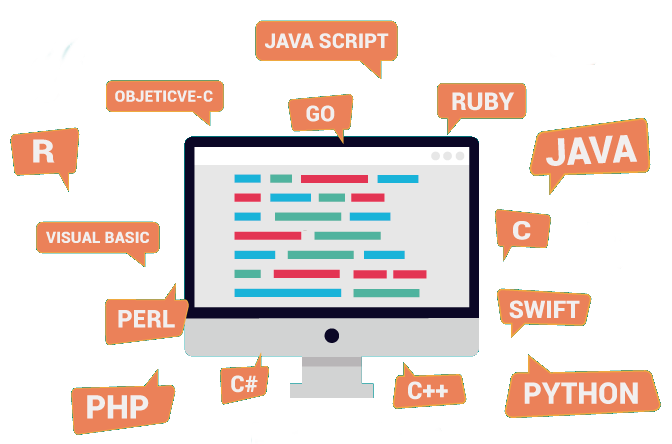

O que é a linguagem C ?
 Em uma era onde o software está cada vez mais presente no nosso dia a dia é importante ter algumas bases de programação, e para tanto é importante ter um bom material com explicações claras e exemplos; e o livro Programar em C se presta bem ao exercício.
Em uma era onde o software está cada vez mais presente no nosso dia a dia é importante ter algumas bases de programação, e para tanto é importante ter um bom material com explicações claras e exemplos; e o livro Programar em C se presta bem ao exercício.
Mas por que C e não Java ou Basic, ou ainda Perl? Linguagens como o Java ou Perl são linguagens a base de bytecode interpretado por uma máquina virtual, sendo assim, não é um código interpretado diretamente pelo processador. Ao contrário de muitas linguagens de programação, o C permite ao programador endereçar a memória de maneira muito parecida como seria feito em Assembly. Linguagens como o Java ou o Perl fornecem mecanismos que permitem que o programador faça o seu trabalho sem ter que se preocupar com a atribuição de memória ou com apontadores. Geralmente isso é bom, uma vez que é bastante trabalhoso lidar com a alocação de memória quando escrevemos aplicações com algoritmos de alto nível. No entanto, quando lidamos com tarefas de baixo-nível como aquelas que um núcleo (kernel) tem obrigação de desempenhar, como a de copiar um conjunto de bytes para uma placa de rede, torna-se altamente necessário um acesso direto à memória ― algo que não é possível fazer com Java. C pode ser diretamente compilado em código de máquina, e por isso é rápido e eficiente. Além disso, C permite personalizar como implementar cada coisa ao básico, como alocação de memória, permitindo adaptações para melhorar desempenho.
Vale lembrar que os softwares interpretadores de script ou bytecode, como Java e Python, são escritos em linguagens como C e C++.
Será uma surpresa que C seja uma linguagem tão popular?
Como num efeito dominó, a próxima geração de programas segue a tendência dos seus ancestrais. Sistemas operacionais desenvolvidos em C sempre têm bibliotecas de sistema desenvolvidas em C. Essas bibliotecas são usadas para criar bibliotecas de programa (como Xlib, OpenGL ou GTK), e seus desenvolvedores geralmente decidem usar a mesma linguagem das bibliotecas de sistema. Desenvolvedores de aplicação usam bibliotecas de programa para desenvolver processadores de texto, jogos, tocadores de mídia, etc. Muitos vão decidir trabalhar com a mesma linguagem que a biblioteca foi escrita, e assim o processo continua...
 C é uma das linguagens de programação mais populares para se escrever sistemas operacionais, como o Microsoft Windows, o Mac OS X e o GNU/Linux. Sistemas operacionais comunicam-se diretamente com o hardware; não há nenhuma camada mais baixa para mediar seus pedidos. Originalmente, os sistemas operacionais eram escritos na linguagem Assembly, o que resultava em um código muito rápido e eficiente. Entretanto, escrever um sistema operacional em Assembly é um processo tedioso (lento), e produz um código que funcionará somente em uma arquitetura de CPU, tal como o x86 ou ARM. Escrever um sistema operacional em uma linguagem de alto nível, tal como C, possibilita que os programadores readaptem o sistema operacional a várias arquiteturas sem precisar reescrever todo o código. O núcleo (kernel) Linux é um exemplo de sistema operacional escrito em C, com apenas algumas seções do código escritas em Assembly, para poder executar instruções que só existem em uma ou outra arquitetura e para algumas otimizações.
> Fonte